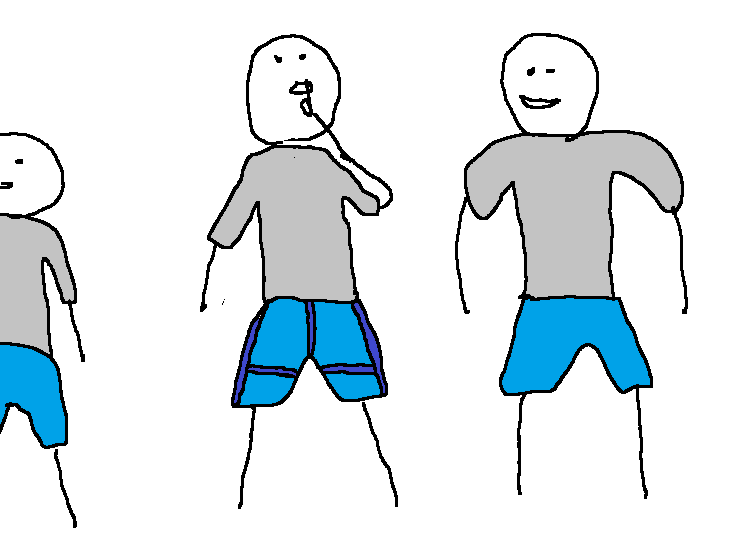

Fordítva vette fel Szinusz a nadrágját tesiórára
Szinusz érkezése a mai napon a testnevelés öltözőbe kicsit késleltetett volt, ezért Szinusz a lehető leggyorsabban próbálta magára húzni ruháit, nem figyelve azok kifordítottságára. Sajnos, mint később Inverz Ackermanntól megtudhatta, a nadrágját fordítva vette föl, amit megpróbált eltitkolni annak ellenére, hogy nadrágja fordítottsága egyértelműen meghatározható távolról szemlélve is. Szinusz próbálta megakadályozni, hogy Tangens tudjon a történtekről, sajnos ez nem sikerült.